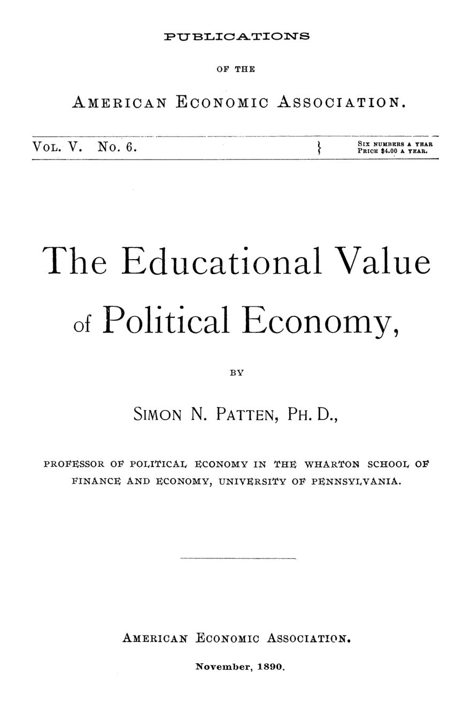

Por que a economia deveria tomar o lugar da física no currículo
Leitura: 8 min
Em 1890, Simon Patten defendeu que a economia treina o raciocínio melhor que a matemática e a física, e listou cinco erros de professores que desperdiçam esse potencial.


O argumento circulava no debate americano sobre a prata. A queda geral dos preços só podia ter três causas: transporte mais barato, produção mais barata ou valorização do ouro. As duas primeiras não bastavam para explicá-la. Logo, o ouro havia se valorizado. Simon N. Patten, professor da Wharton School, na Universidade da Pensilvânia, cita o raciocínio como exemplo de um vício de sala de aula: ninguém garantia que as causas possíveis eram só três.
A tese do ensaio é ambiciosa: a economia política deveria substituir a matemática e a física no curso universitário que forma o raciocínio. Metade do texto explica como professores, ao ensiná-la mal, anulam essa vantagem.
Por que trocar a geometria pela economia?
A faculdade antiga isolava o estudante do mundo e o disciplinava com línguas clássicas e matemática. A nova o prepara para o mundo, e o prazer no estudo vira sinal de valor educativo, como o sabor indica se um alimento convém. Das disciplinas antigas, só a matemática mantinha lugar inquestionado.
Patten contesta esse privilégio com uma teoria das ciências. Toda ciência nasce indutiva, partindo da coleta de fatos, e com o tempo se torna dedutiva, derivando conclusões de princípios. O maior valor educativo está na transição. Uma ciência completa, como a matemática ou a física de seu tempo, ganha em utilidade e perde em valor formativo: tudo o que não serve ao conjunto é cortado. A física que Mill tomava como modelo, observa, já se tornara tão abstrata quanto a matemática.
A economia de 1890 estava no meio do caminho. A teoria da distribuição era altamente dedutiva; a troca, em boa parte; na produção predominava a indução; sobre o consumo, pouco se fizera. O aluno encontra, numa só disciplina, todo tipo de juízo. As cadeias de raciocínio são curtas, o retorno aos princípios é frequente e as conclusões podem ser conferidas nos fatos do dia a dia. E as premissas estão sempre em disputa, o que obriga o estudante a testá-las.
“Verdades inquestionadas têm pouco valor educativo.” (“Unquestioned truths have little educational value.”)
Que tipo de raciocínio a economia treina?
Primeiro, o uso de hipóteses. Para achar causas em casos complexos, o economista deixa de lado fatos secundários e mantém poucos princípios firmes na cabeça, sem confundir as conclusões da hipótese com a realidade. Segundo, a imaginação. Cada economista forma um conceito do mundo econômico, uma espécie de esqueleto da sociedade real. Patten distingue esse conceito do ideal, que é a sociedade melhor que se gostaria de construir. O conceito vem antes.
Ricardo é o exemplo máximo dessa capacidade de abstração: fez pela economia o que Platão fez pela geometria plana. Mas era, diz Patten, uma economia plana. A escola de Jevons e Menger, de base psicológica, tratava de um homem que muda; a de Ricardo, de um homem fixo. A síntese seria uma economia “sólida”. O debate tarifário ilustra o problema: protecionistas enfatizam o efeito sobre os homens; livre-cambistas, o aproveitamento das forças físicas. Olham faces diferentes do mesmo sólido.
Há ainda duas fontes de valor. A história mostra que toda instituição começa como meio de progresso e termina como obstáculo, das guildas ao feudalismo, e que a própria escola de Adam Smith tende a ser superada. Isso dá ao aluno tolerância diante de políticas alheias. E os fatos estão à mão, como num laboratório: relatórios financeiros, municipais, de comércio e navegação, de ferrovias, empresas e bancos, além do censo.
“O velho não pode voltar. O presente não pode permanecer.” (“The old cannot return. The present cannot remain.”)
Onde os professores erram?
Patten aponta cinco erros. O primeiro é ensinar a economia como um bloco fechado, à maneira da matemática, em que cada doutrina serve de degrau para a tese preferida do professor. Seu alvo é a ortodoxia: o aluno sai da faculdade achando que todo o sistema só existe para justificar o livre-comércio e a inação do Estado. Cada doutrina deveria ser testada isoladamente; as relações entre elas ficam para a pós-graduação.
O segundo é a redução ao absurdo, provar uma tese por eliminação das alternativas. Na geometria, se um ângulo não é agudo nem obtuso, é reto. Na economia, nunca se sabe quantas hipóteses existem. Além do caso da prata, Patten cita os socialistas, que partem da lei de ferro dos salários para declarar a concorrência um fracasso, e Henry George, em Progress and Poverty.
O terceiro erro é opor teoria e fato. Os críticos de Malthus mostravam regiões subpovoadas sem atacar suas premissas; Carey tentava refutar a teoria da renda alegando que o produto da terra nem repunha o capital e o trabalho gastos para cultivá-la. Outros diziam que a moeda se multiplicara doze vezes desde a descoberta da América sem perder valor na mesma proporção, logo a teoria quantitativa seria falsa. Fatos assim, responde Patten, só revelam outras causas em ação. O erro inverso é o do teórico que varre os fatos para o lado.
“Uma teoria só pode ser enfrentada por outra teoria, e fatos por fatos.” (“A theory can be properly met only by a theory, and facts by facts.”)
Começar pelo concreto ou pelo abstrato?
O quarto erro contraria o senso comum pedagógico. Em instituições políticas, faz sentido começar pelo governo local, mais simples. Na economia, os fatos são mais complicados que as teorias que os explicam. No comércio exterior e na lei de Gresham, a teoria é simples e os fatos, confusos. Daí a defesa da clareza ricardiana contra os mercantilistas, que tentavam descobrir leis apenas colecionando fatos. Na campanha tarifária, cada partido dizia ao agricultor que sua política encarecia os alimentos e a quem queria comida barata que os barateava.
O quinto é misturar moral e política com economia. Patten não as despreza; pede ordem. A doutrina de George junta a lei da renda de Ricardo, a política negativa de Herbert Spencer e a moral do confisco sem indenização. O livre-comércio junta o custo comparativo, o laissez-faire e uma versão degenerada de Bentham, que supõe que a ganância individual leva ao bem geral. Precisamos, conclui, mais de uma nova moral e de uma nova política do que de um novo sistema econômico.
A recomendação final é institucional: cada disciplina com seu professor. Quem ensina economia, ética e política ao mesmo tempo subordina as outras à favorita, e a economia perde, porque os instintos morais e políticos são mais antigos e mais fortes.
Na minha leitura
Na minha leitura, o ensaio é menos sobre currículo do que sobre higiene intelectual. Os cinco erros de Patten descrevem com precisão o debate econômico de qualquer época: concluir por eliminação, descartar uma teoria com um dado solto, escolher os fatos conforme a plateia, vender um juízo moral como se fosse resultado técnico. O mérito está em tratá-los como falhas de método, corrigíveis pelo ensino.
A separação entre premissas econômicas, políticas e morais segue sendo a disciplina mais difícil de quem formula política pública. Uma reforma tributária, uma regra fiscal ou uma política comercial sempre combinam os três planos. O problema não é a mistura, que é inevitável, mas escondê-la. Patten pedia que cada premissa entrasse no argumento identificada pelo nome, e que a economia não emprestasse sua autoridade a valores que deveriam ser defendidos às claras.
Glossário
- Indução e dedução
- Indução parte de fatos observados para chegar a leis gerais; dedução parte de princípios para derivar conclusões.
- Redução ao absurdo
- Provar uma tese mostrando que todas as alternativas são falsas; só vale quando se conhecem todas as alternativas.
- Lei de Gresham
- Princípio segundo o qual a moeda de pior qualidade tende a expulsar de circulação a de melhor qualidade.
- Teoria quantitativa da moeda
- Ideia de que o valor da moeda varia em sentido inverso à quantidade de moeda em circulação.
- Custo comparativo
- Princípio de que cada país ganha ao se especializar no que produz com menor custo relativo, base do argumento pelo livre-comércio.
Fontes
- The Educational Value of Political Economy (pp. 7–36). JSTOR · Internet Archive (PDF)
- Sumário da edição no JSTOR: Publications of the American Economic Association, vol. 5, nº 6.
Documento em domínio público (EUA, publicado antes de 1931), via JSTOR Early Journal Content e Internet Archive. Resumo e comentário do autor deste site, sem afiliação com a American Economic Association. Encontrou um erro? Escreva: a correção é publicada no próprio texto, com data.
← Nº 26 · O imposto que contava bois e não enxergava ações Nº 28 · Washington, 1890: tarifas, impostos, gás e a maré das ideias →